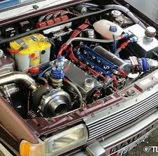

Upgrades básicos:
As primeiras modificações realizadas seriam a dupla de filtro de ar esportivo e um chip de potência novo, contendo a programação ideal para o seu tipo de automóvel.
Este tipo de modificação oferece até 10% de ampliação na potência de um veículo aspirado de baixa cilindrada.
No caso, de um motor turbo a elevação do rendimento tende a ser ainda maior, pois além de ajustar ponto de ignição e injeção de combustível, eleva a pressão do turbo.
O sistema de escape dimensionado além de permitir ronco mais esportivo, o escapamento de maior vazão e bem projetado com materiais de boa qualidade eleva o rendimento do motor e ainda auxilia em sua durabilidade,
uma vez que o fluxo aperfeiçoado auxilia o motor a trabalhar em temperaturas mais frias, facilitando que ele esteja com o desempenho alto pela sua refrigeração.
Um veículo aspirado, especialmente de cilindrada reduzida exige um pouco de contrapressão no escapamento para gerar torque em baixas rotações.
Um escape de diâmetro grande pode apenas fazer barulho e não ter eficiência para seu verdadeiro propósito que seria dar potência e não só consumir mais gasolina pelas altas rotações para que ronco fique
Turbo
O turbo é um compressor desenvolvido para reaproveitar os gases do escape. Quando os gases da queima são expelidos para o escapamento,
ela movimenta uma “hélice” que está conectado a outro rotor, por meio de um eixo. Este segundo conjunto de pás pressuriza o ar para ele entrar no motor, permitindo a queima de mais mistura ar-combustível.
Um turbo ou turbo compressor é composto por basicamente duas partes. Existe a carcaça fria, responsável porcanalizar e pressurizar o ar da admissão do motor, e a carcaça quente (ou turbina), responsável por canalizar os gases de saída do coletor de admissão e fazer a carcaça fria empurrar mais ar para dentro do motor.
Além da dimensão e formato dessas peças, também faz grande diferença no desempenho de um propulsor o formato e o número de pás que cada um dos rotores possuem.
Um motor pode receber diversas configurações de turbo, de modo a melhorar suas respostas em uma determinada faixa de rotação.
Um “assoprador” pequeno “enche” rapidamente e torna o propulsor forte em baixas rotações, mas acaba “estrangulando” o mesmo em altas RPM, devido às dimensões reduzidas para um fluxo de gases elevado.
Já um turbo grande gera o típico “lag” (atraso) em baixas rotações, mas funciona com eficiência em altos giros.
Como em todos os outros tipos de preparações, é importante definir o tipo de aplicação e qual potência desejada na hora de escolher um turbo.
Vantagens: Em linha reta, motores turbos bem desenvolvidos são extremamente divertidos em aceleração e retomadas.
Desvantagens: O alto torque gerado e a forma repentina com que pode ser despejado (dependendo dos ajustes motor) podem dificultar uma condução eficiente em um circuito travado. Além da maior possibilidade de perder tração, o torque elevado quebra com maior facilidade o componente da transmissão.
Combina bem com: Freios, suspensão e pneus de alta qualidade. Ganhar velocidade em um veículo turbo é muito fácil, e isso pode ser um problema em um Track Day,
prova em que várias voltas são realizadas consecutivamente. Esses componentes acabam sendo exigidos ao máximo e deixarão o motorista na mão, caso não sejam bem dimensionados.
